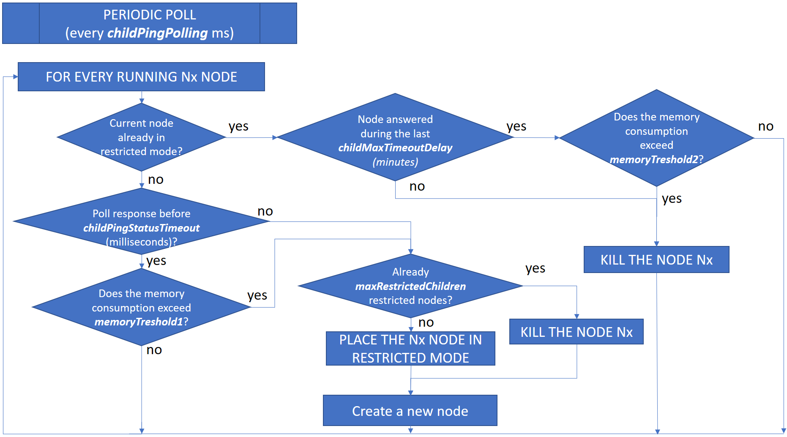

Node.js web server recommendations
Introduction: main principles of setup
The Sage X3 Warehousing web server architecture is based on node.js instances that are load balanced. Each node.js process can manage pages for several users.
The Syracuse load balancer distributes user sessions over the different node.js processes. The distribution is based on an algorithm that considers the response time and occupation rate (number of sessions) of every node.js process.
The load balancer will also:
- Check their memory consumption
- Stop assigning new sessions to a process if necessary (“Restricted mode”)
- Create new processes to supplement restricted ones
It is critical to size the number of nodes and to tune their CPU and memory consumption to get the best performance. node.js is a standard framework that works in asynchronous mode. It is therefore difficult to accurately estimate the number of node.js processes and to size them for a customer instance without extensive analysis.
The sizing requirement differs according to the type of page and functions the users run. The heaviest consumption is encountered with classic pages containing grids with a large number of lines (over 1,000).
The guidelines in this document are a starting point but can be modified on site according to observation, if the result is not optimal.
The configuration of node.js is based on three elements:
- Number of node.js child processes: The number of node.js processes is set up in the host administration page (Administration menu > Administration > Servers > Hosts)
- Memory sizing Memory sizing for each node.js process is defined in a configuration file called nodelocal.js, located in ..\Syracuse\bin in the Syracuse installation directory).
- Time-out settings: The time-out conditions on node.js processes, also defined in nodelocal.js.
Number of node.js processes
The number of node processes depends on the maximum number of session requests during peak activity.
You can use a set of simple rules to initially size a Sage Syracuse (web) server:
- For normal usage, a node.js process can serve up to about 25 typical interactive user sessions. If some or all of those sessions have a high activity level this number should be lowered (see below for examples of high activity levels).
- A session is a single browser tab running a classic page function, or a set of tabs opened by a user running functions in Syracuse mode. Make sure that two tabs of the same browser displayed in different windows are running under the same session. Be careful, if you open a browser tab in incognito/private mode, it is considered as a different session.
- The activity level of a session consists in the actual operations performed by a session. For example, if there are 50 users who perform small operations and whose sessions are inactive most of the time, then it is possible to serve them all through a couple of node.js processes. Inversely, if they perform heavy operations intensively, such as creating hundreds of sales order lines per minute or using large enquiries with thousands of lines, then you need to spread the sessions over more node.js processes.
- A single dedicated logical processor (CPU core) can run 2 to 4 node.js processes (depending on their activity rate).
- The rule above also applies to node.js processes that are dedicated to web services. In that case, memory consumption is normally lower because web service sessions are usually stateless.
The number of node.js processes can be set up through the Administration menu: Administration > Servers > Hosts, mainly through the Number of child processes setting. You do not need to restart the server when increasing the number of child processes, but when decreasing them you need to make sure you are the only user connected to the application.
Some recommendations can be given to the end users to reduce memory and CPU pressure on the node.js processes:
- Please note that all the tabs or windows opened in the same browser of a user are assigned to a single node.js process because they belong to the same session (except for private/incognito tabs). If your tabs contain large classic screens with lots of lines, it is preferable to limit the number of simultaneous browser tabs to avoid memory over-consumption for a single node.
- The memory associated to classic pages is only released when the function is closed. Make sure the browser tabs are closed when not needed anymore.
- If you really need to open several pages with huge classic page grids, you can use several browsers (such as Chrome and Firefox, with also a private/incognito tab) to distribute the sessions on several node processes. A normal session and an incognito window on Chrome plus a normal tab and a private tab on Firefox will represent 4 sessions. These sessions can be split across 4 nodes if the number of nodes is big enough.
Sizing of node.js processes
A default Syracuse installation has default sizing settings that define the memory consumption of each node.js process, but you can modify them and also use advanced parameters defined in the nodelocal.js configuration file.
The configuration file is located on the Syracuse server (..\Syracuse\bin\nodelocal.js) and contains default parameters settings. The nodelocal.js file is never modified during an update and must always be set up manually. The modification will only be effective when you restart your Syracuse server.
Warning: It is recommended to back up the file before any modification. Incorrect JSON syntaxes in nodelocal.js will prevent the Syracuse server from starting.
The default nodelocal.js file supplied at installation does not contain any of the advanced sizing parameters but experience shows that it might be necessary to change default values to cover most heavy activity classic page users. The table below lists the settings and their recommended values.
Three parameters are related to the heap memory consumption (i.e., the dynamic allocated memory) of node. The heap memory includes the objects used by node.js and the ones that have been allocated but are not used anymore. Periodically, the garbage collector will make the no more used memory available again. These parameters defined in MB are the following:
memoryThreshold1: defines the limit beyond which a node.js process will be placed in restricted mode, i.e., it will not accept any new connections. This value can be extended up to the size given bymax_old_space_size, see below.When a node.js process is placed in restricted mode, it stops being part of the load balancing group and another process is created to take its place. The current (restricted) process continues to handle its current sessions normally but will not accept any new connection. When the last session hosted on this node will end, the corresponding node will stop.
The new process created when a node.js is restricted runs just like a normal node.js process. It is identified in the process list as “no_cleanup_Nx”, if the restricted node was Nx.
memoryThreshold2: defines the memory consumption limit or a node.js process. When the memory consumed exceeds that value, the load balancer will terminate the node.js process. This value must always be higher thanmemoryThreshold1.The no_cleanup_Nx node is also terminated when it exceeds
memoryThreshold2. Note that the memory really consumed by a node can exceed this parameter, because only the heap memory is concerned. For example, ifmemoryThreshold2is equal to 8,000 the node process will terminate only if the total memory exceeds (approximately) 9,500 MB.max_old_space_size: This is the maximum memory allocation possible of a node process. When this limit is reached, node.js will crash and stop. The parametersmemoryThreshold1andmemoryThreshold2must be smaller than this value.
As the load balancer will kill the node.js process if the memory exceeds memoryThreshold2, there is no significant advantage to make max_old_space_size much bigger than memoryThreshold2. The higher this parameter is, the less frequently the node will consider cleaning the allocated but not yet used memory (in other terms, running the garbage collector). Therefore, if there is a difference between memoryThreshold2 and max_old_space_size, it might only enhance the performance of the running nodes by decreasing the number of times the garbage collector runs.
Additional parameters are used to manage the load balancer behavior:
maxRestrictedChildren: maximum number of node processes restricted for all nodes on a server. When this number is reached, if a node is in the condition to be placed in restricted mode, it will be killed and replaced by a new node. The number of restricted nodes cannot exceed this value.childStatusPolling: defines the frequency used by the load balancer to poll every node process to check its status.childPingStatusTimeout: when a child process takes longer than the number of milliseconds specified here to respond to the load balancer’s ping, it is placed in restricted mode.childMaxTimeoutDelay: when a child process in restricted mode has not responded to any load balancer ping during the number of minutes specified here, the process is killed.
The process used by the load balancer to manage the process can be summarized by the following flowchart:

Note: from version 12, it will also be possible to define memoryThreshold1 and memoryThreshold2 as a percentage of max_old_space_size with the following syntax: memoryThreshold1="80%". If no values are given for memoryThreshold1 and memoryThreshold2, they will be defined by default as 80% and 95% of max_old_space_size.
The recommended values for these advanced parameters are as follows:
| Value recommended for normal/medium usage (Inquiries < 1,000 lines, no large Excel exports) | Value recommended with large classic screens (Inquiries > 1,000 lines, large Excel exports, multiple tabs with large screens…) | |
|---|---|---|
memoryThreshold1
|
2,500 MB | 4,000 MB |
memoryThreshold2
|
3,000 MB | 5,000 MB |
childPingStatusTimeout
|
30,000 ms | |
childMaxTimeoutDelay
|
30 min | |
max_old_space_size
|
At least the value of memoryThreshold2 (an increment of approximately 10% can be added) 3,500 MB or 5,500 MB for the example above |
|
maxRestrictedChildren
|
|
|
nodelocal.js example
Here is an extract of a configuration that can be adapted:
"searchEngine": {
"hostname": "mysearchserver",
"port": 9600
},
"x3fusion": {
"records": {
"dumpPath": "C:\\Sage\\SAFEX3\\MYSYRSERV/Syracuse/cache/_cvg___USERNAME__"
},
},
"session": {
"timeout": 20,
"checkInterval": 60,
"auth": "basic"
},
"nanny": {
// Number of nodes in restricted mode before killing the next node turning in restricted mode:
// DefaultValue = 10; most of the time, 10 nodes are too much and allocate too much memory
// In this example there are 5 nodes.
"maxRestrictedChildren": 5,
// try to connect child processes every 'childPingStatusPolling' milliseconds.
// Load balancer will measure the response time and consider this for load balancing.
// This is a sliding mean, it is computed as follows:
// the newest value will be considered by (100-'childSlidingMean') percent, the previous computed
// value by 'childSlidingMean' percent. When a child process takes longer than
// 'childPingStatusTimeout'milliseconds for the ping response, it will be turned into
// restricted mode.
// Default value: 60000 (milliseconds)
"childPingStatusPolling": 60000,
// Default value: 20 (percents)
"childSlidingMean": 20,
// Default value: 30000 (milliseconds)
"childPingStatusTimeout": 30000,
// Max delay for a child to stay in a consecutive timeout state.
// If this period of time is exceeded, the process is killed.
// Default value: 30 (minutes)
"childMaxTimeoutDelay": 30
// waiting time (milliseconds) during load balancing to obtain results of other processes
// Default value: 600
"balancingWaitTime": 600
},
"system": {
// Load balancer will not assign new sessions anymore when the heap usage exceeds this value (in MB)
"memoryThreshold1": 2500
// Process will be killed during load balancer ping operation when the heap usage exceeds
// this value (in MB)
"memoryThreshold2": 3000
},
"hosting": {
// node.js options
"nodeOptions": "--max_old_space_size=3500"
}
}
Load balancer for multi-Syracuse server architectures
We strongly recommend using dedicated load balancing services such as HAProxy, NGINX, VMWare NSX, ALB or F5 on architectures involving a cluster of Syracuse Servers, when there are more than 200 concurrent sessions.
For instances with less than 200 sessions, you can use the integrated load balancer.
Server resources
The total memory and CPU capacity on the Syracuse server must be tailored for your settings.
Total memory must be able to accommodate all node processes at their peak usage, and also the additional “no_cleanup” node processes that are allowed by maxRestrictedChildren, which must be taken into account. The maximum memory consumption of a node is defined by max_old_size.
In addition, you must consider the operating system and any other applications running on that machine. Make sure you have enough memory available. Also make sure you have appropriate swap space on the server's disks.
The total number of cores is calculated similarly based on the guidelines in this document. Also make sure you have enough physical cores, proper socket distribution and the proper power management settings (set to 'Performance', and not 'Balanced'). These will be important for the number of vCPUs if you are running a virtualized environment.
Memory consumption examples
Memory consumed by a connection is directly linked to the activity of that session. For example, running a large inquiry or request with 10,000 lines displayed on the screen will cause the related node.js process to consume hundreds of Megabytes holding the full data structure. Syracuse pages do not cause as much memory consumption as paging/caching is used natively. Here are a few typical examples as an illustration:
| Sage X3 Warehousing management function | Display | Session's node.js memory consumption |
|---|---|---|
| Account inquiry (CONSCPT): 10,000 lines | 500 lines per page, 20 pages | ~ 600 MB |
| Manual matching (LETTRAGE): 30,000 lines | 15 lines per page, 2,000 pages | ~ 950 MB |
| Manual matching (LETTRAGE): 30,000 lines | 500 lines per page, 20 pages | ~ 850 MB |
Calculation formulas
You will find below a set of formulas that you can use as a starting base to set up an initial architecture to work with.
Caution: these are only initial indications, you will have to evaluate and tune the parameters according to your customer’s use cases.
Assuming:
- N = number of node child processes defined in the instance (see above)
- maxR = value of the
maxRestrictedChildrenparameter
Then:
- Total maximum memory requirement for Syracuse component =
(memoryThreshold1 * N) + (max_old_size * maxR)Note: This is a maximum value considering all potential heavy sessions are working at maximum capacity. In most cases this is too much. You should adjust the value based on observation and benchmarking: if memory consumption is consistently lower, then you can lower memory requirements. In most normal cases, the following formula will work:Max Syracuse memory = memoryThreshold1 * N
Sage legal disclaimer
The information contained in this guide are for general guidance only and are subject to change without notice. The sizing principles explained are intended to give you an indication on how to size the web server. The result may vary depending on the configuration and the use cases.
If you need specific recommendations for dedicated cases, we recommend a collaboration with Sage experts.